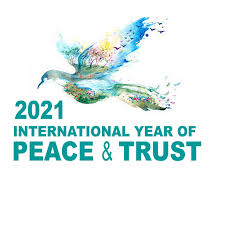

Who

UNESCO is governed by the General Conference composed of member states and associate members, which meets biannually to set the agency's programs and budget. It also elects members of the executive board, which manages UNESCO's work, and appoints every four years a Director-General (Audrey Azoulay), who serves as UNESCO's chief administrator.
What
UNESCO implements its activities through the five programme areas: education, natural sciences, social and human sciences, culture, and communication and information.
- UNESCO supports research in comparative education, provides expertise and fosters partnerships to strengthen national educational leadership and the capacity of countries to offer quality education for all.
- Designating projects and places of cultural and scientific significance.
- Encouraging the "free flow of ideas by images and words".
- Promoting events.
- Founding and funding projects.
When

A United Nations Conference for the establishment of an educational and cultural organization (ECO/CONF) was convened in London from 1 to 16 November 1945 with 44 governments represented.The Preparatory Commission operated between 16 November 1945, and 4 November 1946 — the date when UNESCO's Constitution came into force with the deposit of the twentieth ratification by a member state.The first General Conference took place from 19 November to 10 December 1946, and elected Julian Huxley to Director-General.
Where

The UNESCO headquarters is located at Place de Fontenoy in Paris, France. UNESCO's field offices across the globe are categorized into four primary office types based upon their function and geographic coverage: cluster offices, national offices, regional bureaus and liaison offices. In Venice there is the Regional Bureau for Sciences and Culture in Europe.
Why

The United Nations Educational, Scientific and Cultural Organization (UNESCO)is a specialized agency of the United Nations (UN) with the aim of promoting world peace and security through international cooperation in education, arts, sciences and culture. Its constitution establishes the agency's goals, governing structure, and operating framework.UNESCO's founding mission, which was shaped by the events of World War II, is to advance peace, sustainable development and human rights by facilitating collaboration and dialogue among nations.